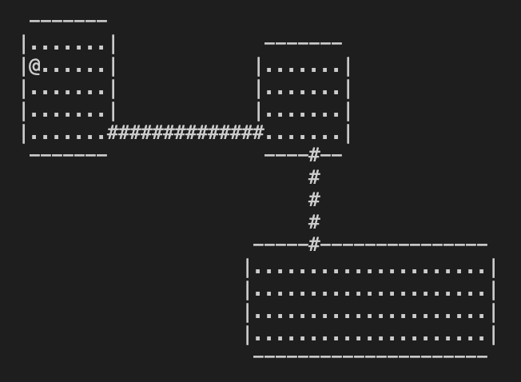
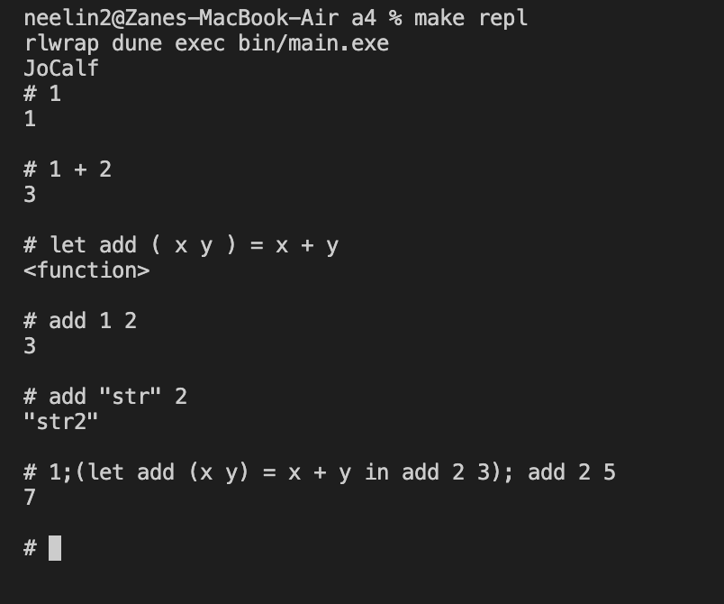
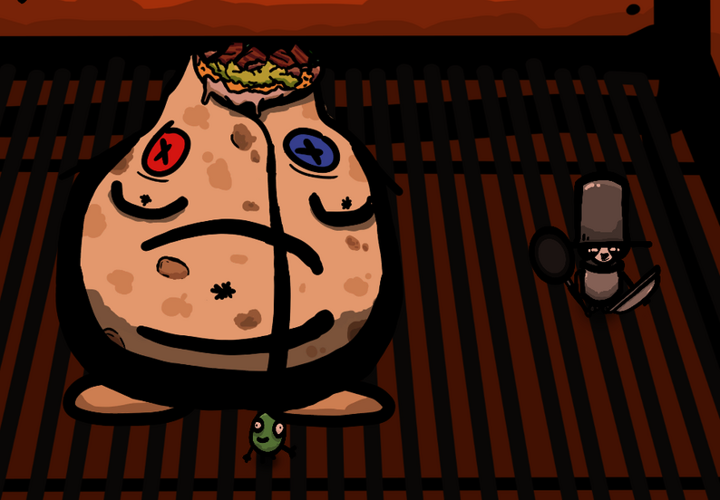

Projects
Diviner Algorithm
Tools, Languages, and Libraries: Python, Pandas, Jupyter
 The Diviner is
an instrument aboard NASA's Lunar Reconnaisance Orbiter. It creates detailed day and night
surface temperature maps of the moon. The diviner operated continuously since 2009 and its data most
prominently helped discover potential lunar ice deposits. However, in 2021, A UCLA grad student discovered an
irregularity in the diviner data.
The Diviner is
an instrument aboard NASA's Lunar Reconnaisance Orbiter. It creates detailed day and night
surface temperature maps of the moon. The diviner operated continuously since 2009 and its data most
prominently helped discover potential lunar ice deposits. However, in 2021, A UCLA grad student discovered an
irregularity in the diviner data.
The moon is covered in pit craters, a small crater formed from collapsed lava tunnels. These craters are significant because their depth maintains a stable and comfortable temperature during the moon's orbit. If we ever were to colonize the moon, we would likely habiate pit craters. The grad student noticed that the temperature data surrounding said pit craters was strange. When the pit crater faced away from the sun, and the rest of the surrounding surface dropped in temperature, the data points adjacent to the pit crater also dropped in temperature. UCLA brought aboard a team of interns to work with the grad student and Dr. David Paige to examine this irregularity in the data.
Using Python and Pandas, we constructed a large data set by correcting the off set at thousands of pit craters. In examining this data, we discovered that an event had happened sometime in 2013, possibly some sort of asteroid impact, that offset the instrument. With our data set, we developed an algorithm to automatically correct this offset that has since been implemented in the Diviner instrument on the LRO. We presented our findings to the resto of the department at a UCLA Earth, Planetary and Space Science conference
Dungeon Quest
Tools, Languages, and Libraries: OCaml
 I worked with 2 of my friends, creating Dungeon Quest, a video game inspired by the 1987 roguelike video game, Nethack, and the classic tabletop game, Dungeons & Dragons. This was my first large scale project in OCaml, so I was forced to adjust to functional programming. The project proved to be both extremely rewarding and entertaining; it taught me many lessons that improved both my programming skills and teamwork ability
We built out dungeon exploration, a battle system, an inventory system, traps, puzzles, flavor text, and other elements of classic rpgs in OCaml. I hope to continue expanding this project and one day potentially release it.
OCaml Projects
Tools, Languages, and Libraries: OCaml
OCaml was my first foray into functional programming. While taking the class CS 3110 at Cornell, I worked on several project in the language.
- I made a functioning engima machine that encoded and decoded messages, using the Enigma ciphering algorith.
- I created a text-based adventuring game inspired by GORK and other classic adventure games.
- I made a text document search engine that searched through folders of text documents for words.
- Lastly, I constructed an interpreter for a new programming language, descended from OCaml and JavaScript.
Out of the Pan and Into the Fire
Tools, Languages, and Libraries: Unity, C#, Adobe Photoshop
Out of the Pan and Into the Fire was a video game I built during a 48 hour window during the GameMaster's Toolkit Game Jam. Before this I had participated in several in-school hackothons, but this was the first large-scale hackathon I entered. Building a finished product within 24 hours in tough. Whereas in a standard hackathon, you really are only constructing a prototype, in a game jam, your game must be a relatively polished product. My experience with C# before this was limited, so completing the game stretched and expanded my capabilities. Furthermore, I also did all the art for the game. Constructing various sprites and backgrouns was an absolute blast and was a good break from worrying about quaternions and other more complicated elements of the Unity engine.
The theme of the jam was chaos. We decide to make an arcade-style wave battle game. The player moved their character around the screen and could draw out patterns with their mouse. Once they finished the pattern, the pan the player character was holding would shoot out, following the pattern and bouncing off various walls, destroying enemies like Thor's hammer. As the pan bounced off more and more walls, it increased in speed, engendering more chaos. We built and coded the AI for various enemies, including a final boss. We also made a in-game shop where the player could purchase upgraded armor and hammers.
Various IOS Projects
Tools, Languages, and Libraries: XCode, Swift5, TestFlight, Python, NumPy
During highschool and college, I made several prototype apps using XCode and Swift5. I built an app that generates a random athlete and information about him based off the input of a jersey uniform. I built an app where you can answer anonymous questions about your friends. I built an app similar to Tinder except for forming Dungeons & Dragons groups. I currently am working on an app that uses a machine-learning algorithm to guess what a number is based off the input of a user drawing. I am building the neural network for this app from scrath.
Entrepreneurship Projects
Tools, Languages, and Libraries: XCode/Swift5, HTML/CSS/JavaScript, React
During high school, I pursued several entrepreneurship projects while on the E-board for the school's venture entrepreneurship club. A lot of the programming I did was front-end development, making websites or app interfaces for several projects. I helped build a company that upcycled plastic in the Dominican Republic. I worked on the entrepreneurship side of the project and created the website for the company. I also contributed to several apps for other entrepreneurship projects, including a social app where you answered questions about your friends anonymously. Our team released this app in beta in several different schools.
Java Projects
Tools, Languages, and Libraries: Java
In an effort to practice Java and improve my knowledge of data structures, I worked on several practice projects in java. I created an efficient maze-solving algorithm, made versions of Dijkstra's shortest path algorith, made several interactive games with Java's GUI system, made a tree processing system, implemented linked lists, among other projects. Several of these projects are linked above.
Machine Learning Club
Tools, Languages, and Libraries: Python
I have always found machine-learning fascinating. Advancements in machine-learning will be responsbile for humanity's next step forward. Thus, I joined the machine-learning club in my highschool. I eventually would become an E-board member of the club and was fasinated with the topic. I am currently working on several machine-learning based projects.
Law Firm Intership
I was intern for the legal recruitment firm, Lippman Jungers Bala LLC. I help redesign their website to prioritise SEO and ease-of-use. This internship also taught me many lessons about working in an office and working with others in a corporate setting.